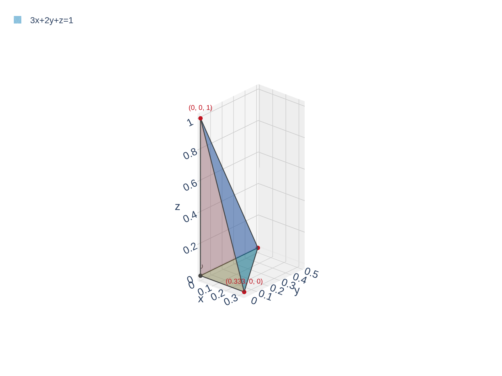
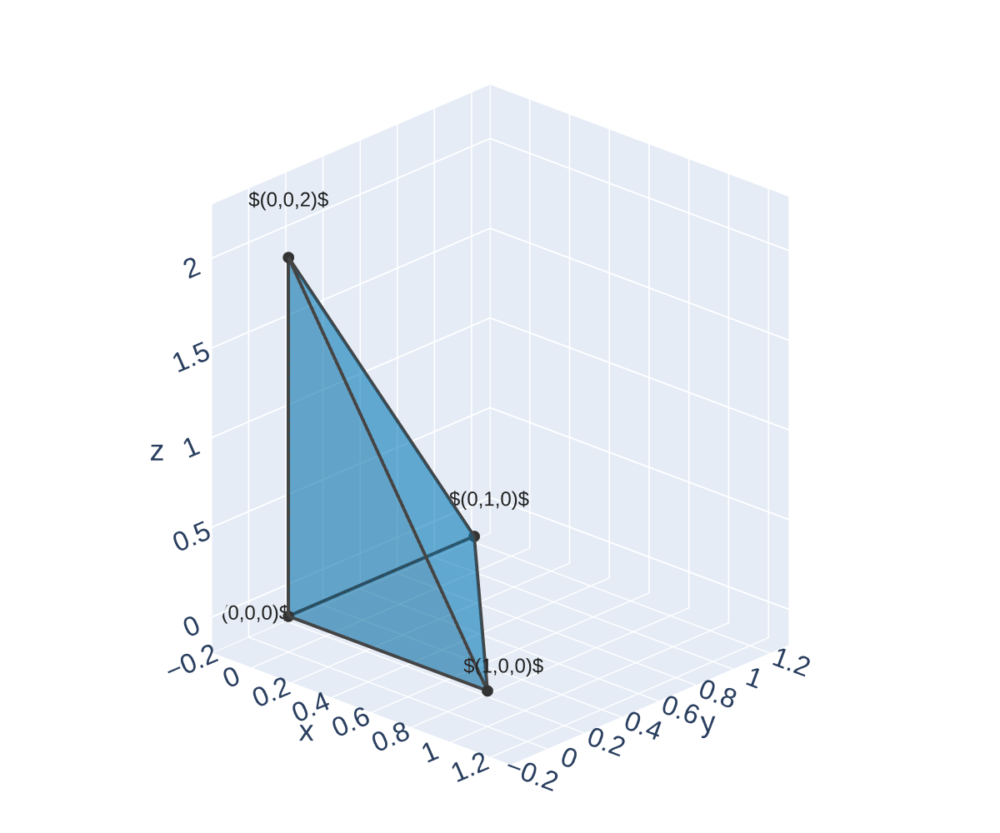

From Double to Triple
In Sections 15.1–15.5 we integrated \(f(x,y)\) over a 2D region in \(\mathbb{R}^2\). Now we go one dimension higher: integrating \(f(x,y,z)\) over a 3D solid in \(\mathbb{R}^3\).
Recall the progression:
- Calc I: \(\displaystyle\int_a^b f(x)\,dx\) — integrate over an interval (1D)
- Calc III (Ch 15.1–15.5): \(\displaystyle\iint_D f(x,y)\,dA\) — integrate over a region (2D)
- Now: \(\displaystyle\iiint_E f(x,y,z)\,dV\) — integrate over a solid (3D)
The construction is the same: partition the solid \(E\) into tiny boxes, multiply each \(f\)-value by the volume of the box \(\Delta V = \Delta x \Delta y \Delta z\), add them all up, and take the limit:
\[\iiint_E f(x,y,z)\,dV = \lim_{l,m,n \to \infty} \sum_{i=1}^{l}\sum_{j=1}^{m}\sum_{k=1}^{n} f(x_{ijk}^*, y_{ijk}^*, z_{ijk}^*)\,\Delta V\]
Same idea, one more dimension. Chop, multiply, add, take the limit.
Interpretation: Density and Mass
What does \(\iiint_E f(x,y,z)\,dV\) mean physically?
If \(f(x,y,z) = 1\) for all points, then:
\[\iiint_E 1\,dV = \text{volume of } E\]
This is the 3D version of “area \(= \iint_D 1\,dA\).”
The most common physical interpretation: if \(f(x,y,z) = \rho(x,y,z)\) is a density function (mass per unit volume, like \(\text{g/cm}^3\) or \(\text{kg/m}^3\)), then
\[\iiint_E \rho(x,y,z)\,dV = \text{total mass of } E\]
More generally, if \(f\) gives “amount per unit volume,” then \(\iiint_E f\,dV\) gives the total amount in \(E\):
- Charge density (\(\text{C/m}^3\)) \(\to\) total charge
- Bacteria concentration (\(\text{cells/cm}^3\)) \(\to\) total bacteria count
- Probability density \(\to\) total probability
Triple integrals accumulate a quantity spread throughout a 3D solid — density times volume gives mass.
Quick Check: Interpret a Triple Integral
Suppose \(\rho(x,y,z) = 3z\) gives the density (in g/cm\(^3\)) of a solid \(E\).
What does \(\displaystyle\iiint_E 3z\,dV\) compute? What are the units?
Think about what density \(\times\) volume gives you. What role does \(z\) play in the density?
\(\displaystyle\iiint_E 3z\,dV\) computes the total mass of the solid \(E\).
Units: \(\left(\frac{\text{g}}{\text{cm}^3}\right) \times \text{cm}^3 = \text{g}\) (grams).
The density \(\rho = 3z\) increases with height — the solid is denser at the top than at the bottom.
To interpret a triple integral, ask: “What does the integrand measure per unit volume?” The integral gives the total amount.
Setting Up the Limits of Integration
Just like double integrals, we evaluate triple integrals as iterated integrals. There are six possible orders (we'll discuss this more shortly), but the strategy is the same for all of them.
The key idea: Choose one variable to integrate first (the inner integral). Its limits may depend on the other two variables. Then set up a double integral over the remaining two variables — exactly like Sections 15.2–15.3.
A common approach (inside out):
- Pick a direction to “slice” the solid. For each fixed point in the other two variables, find where the solid starts and stops in the slicing direction \(\to\) limits on the inner integral.
- Project the solid onto the plane of the other two variables \(\to\) a 2D region.
- Set up the double integral over that 2D region as in Sections 15.2–15.3.
For example, if we slice in the \(z\)-direction:
\[\iiint_E f\,dV = \iint_D \left[\int_{z_{\text{bottom}}}^{z_{\text{top}}} f\,dz\right] dA\]
where \(D\) is the shadow of \(E\) on the \(xy\)-plane.

The hardest part of triple integrals is finding the limits. The actual integration is just three rounds of Calc I antiderivatives.
Example 1: Triple Integral Over a Tetrahedron
Evaluate \(\displaystyle\iiint_E 2xyz\,dV\), where \(E\) is the solid in the first octant bounded by the plane \(3x + 2y + z = 1\).
Find the limits for \(dz\,dy\,dx\). Start with: for fixed \(x,y\), \(z\) goes from \(0\) up to the plane. Then project onto the \(xy\)-plane.
Describe the solid: \(E\) is a tetrahedron (triangular pyramid) with vertices at \((0,0,0)\), \((\frac{1}{3},0,0)\), \((0,\frac{1}{2},0)\), and \((0,0,1)\).

Limits on \(z\): The bottom is \(z = 0\) and the top is \(z = 1 - 3x - 2y\).
Project onto the \(xy\)-plane: Set \(z = 0\) in the plane equation to get \(3x + 2y = 1\), or \(y = \frac{1-3x}{2}\). So \(y\) ranges from \(0\) to \(\frac{1-3x}{2}\).
Limits on \(x\): \(x\) ranges from \(0\) to \(\frac{1}{3}\) (where \(y = 0\)).
\[\iiint_E 2xyz\,dV = \int_0^{1/3} \int_0^{(1-3x)/2} \int_0^{1-3x-2y} 2xyz\,dz\,dy\,dx\]
Example 1: Triple Integral Over a Tetrahedron
Now evaluate — three rounds of Calc I integration:
Inner integral (integrate with respect to \(z\)):
\[\int_0^{1-3x-2y} 2xyz\,dz = 2xy \cdot \frac{z^2}{2}\Big|_0^{1-3x-2y} = xy(1-3x-2y)^2\]
Middle integral (integrate with respect to \(y\)):
\[\int_0^{(1-3x)/2} xy(1-3x-2y)^2\,dy\]
Let \(u = 1 - 3x - 2y\), \(du = -2\,dy\). When \(y = 0\): \(u = 1-3x\). When \(y = \frac{1-3x}{2}\): \(u = 0\).
\[= x \int_{1-3x}^{0} \frac{1-3x-u}{2} \cdot u^2 \cdot \left(-\frac{du}{2}\right) = \frac{x}{4}\int_0^{1-3x} u^2(1-3x-u)\,du\]
\[= \frac{x}{4}\left[\frac{(1-3x)u^3}{3} - \frac{u^4}{4}\right]_0^{1-3x} = \frac{x}{4}\left[\frac{(1-3x)^4}{3} - \frac{(1-3x)^4}{4}\right] = \frac{x(1-3x)^4}{48}\]
Outer integral:
\[\int_0^{1/3} \frac{x(1-3x)^4}{48}\,dx\]
Let \(w = 1-3x\), \(dw = -3\,dx\), \(x = \frac{1-w}{3}\). Limits: \(w = 1\) to \(w = 0\).
\[= \frac{1}{48}\int_1^0 \frac{(1-w)}{3} w^4 \left(-\frac{dw}{3}\right) = \frac{1}{432}\int_0^1 w^4(1-w)\,dw = \frac{1}{432}\left[\frac{1}{5} - \frac{1}{6}\right] = \frac{1}{432}\cdot\frac{1}{30} = \frac{1}{12960}\]
\(\displaystyle\iiint_E 2xyz\,dV = \frac{1}{12960}\). The hardest part was the limits — the integration itself was just repeated substitutions.
Quick Check: Describe the Solid
Describe the solid \(E\) whose volume is given by:
\[\int_0^1 \int_0^{1-x} \int_0^{2-2x-2y} dz\,dy\,dx\]
Read the limits from outside in. What shape has these boundary surfaces?
Bottom: \(z = 0\) (the \(xy\)-plane). Top: \(z = 2 - 2x - 2y\), i.e., the plane \(2x + 2y + z = 2\).
Projection onto \(xy\)-plane: \(y\) from \(0\) to \(1-x\), \(x\) from \(0\) to \(1\) — a triangle with vertices \((0,0)\), \((1,0)\), \((0,1)\).
\(E\) is a tetrahedron with vertices at \((0,0,0)\), \((1,0,0)\), \((0,1,0)\), and \((0,0,2)\).
Its volume is \(\frac{1}{3} \cdot \text{base area} \cdot \text{height} = \frac{1}{3} \cdot \frac{1}{2} \cdot 2 = \frac{1}{3}\).

Reading limits tells you the solid's boundaries. Projecting onto a coordinate plane gives you the 2D shadow.
Six Orders of Integration
A triple integral can be written in six different orders:
\[dz\,dy\,dx \qquad dz\,dx\,dy \qquad dy\,dz\,dx \qquad dy\,dx\,dz \qquad dx\,dz\,dy \qquad dx\,dy\,dz\]
All six give the same answer (assuming the function is continuous), but some orders may be much easier to evaluate than others!
Strategy for choosing the best order:
- Look for limits that are constants — those variables should go on the outside
- Look for an integrand that simplifies when you integrate a particular variable first
- Sketch the solid and look for natural “top/bottom,” “left/right,” or “front/back” descriptions
For the tetrahedron below \(3x + 2y + z = 1\) (Example 1), here's the \(dy\,dz\,dx\) version:
Fix \(x\) and \(z\): \(y\) goes from \(0\) to \(\frac{1-3x-z}{2}\). Fix \(x\): \(z\) goes from \(0\) to \(1-3x\). Then: \(x\) goes from \(0\) to \(\frac{1}{3}\).
\[\int_0^{1/3}\int_0^{1-3x}\int_0^{(1-3x-z)/2} 2xyz\,dy\,dz\,dx\]
Switching the order of integration changes the limits, not the integrand. Always re-derive the limits from scratch by thinking about the geometry.
Example 2: Volume Using a Triple Integral
Find the volume of the solid bounded by the parabolic cylinder \(y = x^2\), and the planes \(z = 0\), \(z = 4\), and \(y = 9\).
Set up \(\iiint_E 1\,dV\) in order \(dz\,dy\,dx\). What are the top/bottom surfaces? Where does \(y = x^2\) intersect \(y = 9\)?
Describe the solid: The solid sits between \(z = 0\) and \(z = 4\) (constant height), behind \(y = 9\), and in front of \(y = x^2\) (a parabolic wall).

Limits on \(z\): \(0 \leq z \leq 4\) (constant — nice!).
Limits on \(y\): From the parabolic wall \(y = x^2\) to the flat wall \(y = 9\).
Limits on \(x\): \(y = x^2 = 9 \Rightarrow x = \pm 3\), so \(-3 \leq x \leq 3\).
\[V = \int_{-3}^{3}\int_{x^2}^{9}\int_0^4 dz\,dy\,dx\]
Inner integral: \(\displaystyle\int_0^4 dz = 4\)
Middle integral: \(\displaystyle\int_{x^2}^{9} 4\,dy = 4(9 - x^2)\)
Outer integral:
\[\int_{-3}^{3} 4(9-x^2)\,dx = 4\left[9x - \frac{x^3}{3}\right]_{-3}^{3} = 4\left[(27 - 9) - (-27+9)\right] = 4 \cdot 36 = 144\]
\(V = 144\) cubic units. When the \(z\)-limits are constants, the inner integral is trivial and the problem reduces to a double integral.
Example 3: Setting Up in Two Different Orders
The solid \(E\) is bounded by \(z = 0\), \(y = 0\), \(z = y\), and \(y = 4 - x^2\).
(a) Set up \(\displaystyle\iiint_E 1\,dV\) in the order \(dz\,dy\,dx\).
(b) Set up the same integral in the order \(dy\,dz\,dx\).
For (a): What are the top and bottom surfaces? Project onto the \(xy\)-plane. For (b): What are the left and right surfaces in the \(y\)-direction? Project onto the \(xz\)-plane.
(a) Order \(dz\,dy\,dx\):
Inner (\(z\)): Bottom \(z = 0\), top \(z = y\). So \(0 \leq z \leq y\).
Middle (\(y\)): From \(y = 0\) to \(y = 4 - x^2\) (the parabola).
Outer (\(x\)): \(4 - x^2 = 0 \Rightarrow x = \pm 2\).
\[V = \int_{-2}^{2} \int_0^{4-x^2} \int_0^{y} dz\,dy\,dx\]
(b) Order \(dy\,dz\,dx\): Now \(y\) is the inner variable.
Inner (\(y\)): The plane \(z = y\) gives \(y = z\) as the lower bound. The parabola gives \(y = 4 - x^2\) as the upper bound. So \(z \leq y \leq 4 - x^2\).
Middle (\(z\)): \(z\) goes from \(0\) up to where \(z = y\) meets \(y = 4 - x^2\), i.e., \(z = 4 - x^2\).
Outer (\(x\)): Still \(-2 \leq x \leq 2\).
\[V = \int_{-2}^{2} \int_0^{4-x^2} \int_z^{4-x^2} dy\,dz\,dx\]
Same solid, same answer, different limits. Switching the order changes which variable depends on which — always re-derive limits from the geometry, never try to algebraically rearrange old limits.
Section 15.6 Summary
\(\displaystyle\iiint_E f(x,y,z)\,dV\) — limit of triple Riemann sums over tiny boxes.
\(f = 1\): volume. \(f = \rho\) (density): total mass. \(f = \) amount per volume: total amount.
Identify top/bottom surfaces for \(z\), project onto \(xy\)-plane, then set up the 2D region as in 15.2–15.3.
\(dz\,dy\,dx\), \(dz\,dx\,dy\), \(dy\,dz\,dx\), \(dy\,dx\,dz\), \(dx\,dz\,dy\), \(dx\,dy\,dz\). All give the same answer; some are easier.
Three nested Calc I integrals. Work from the inside out.
Coming up next: Some solids have circular symmetry that makes Cartesian limits messy. In Section 15.7 we'll switch to cylindrical coordinates — polar coordinates plus a \(z\)-axis — to handle cylinders, cones, and paraboloids.
Homework
Section 15.6
1, 3, 5, 6, 7, 9, 11, 13, 15, 17, 19, 25, 31, 33